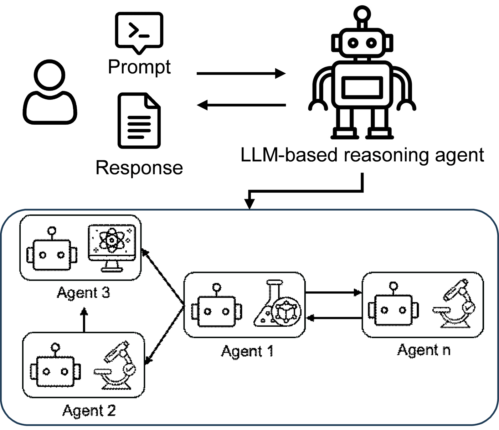

Research Direction 01
Autonomous design and discovery
AI agents that learn from simulation, experiments, and one another to accelerate scientific discovery.

We develop closed-loop discovery systems that connect high-throughput simulation, digital twins, physical experiments, scientific literature, and adaptive learning. An LLM-based reasoning engine coordinates specialized agents for modeling, synthesis, and experimentation, while collaborative Bayesian optimization and multi-fidelity learning help the agents share knowledge and identify the most valuable next evaluation. This framework replaces slow, sequential workflows with continuous learning across digital and physical evidence, supporting faster, more data-efficient discovery while preserving physical insight, interpretability, and experimental accountability.
Selected journal articles
- Wang, Z., Chen, Y. P., Dolar, T., Chen, W. "ARCO-BO: Adaptive Resource-aware COllaborative Bayesian Optimization for Heterogeneous Multi-Agent Design Optimization." Journal of Mechanical Design, 2026. Link
- Dolar, T., della Ventura, N. M., Mignerot, F., Wang, Z., et al. "Accelerating Materials Discovery in Heterogeneous Composition-Property Design Spaces via Collaborative Bayesian Optimization." Materials & Design, 2025. Link
- Kumbhojkar, G., Wang, Z., Keten, S., Chen, W. "Multi-objective Bayesian Optimization for Design Under Unknown Feasibility Constraints." Journal of Mechanical Design, 2026. Link
- Song, J., Ihuaenyi, R. C., Lim, J., Wang, Z., et al. "A Microstructural Electrochemo-Mechanical Model of High-Nickel Composite Electrodes Towards Digital Twins to Bridge the Particle and Electrode-Level Characterizations." Energy & Environmental Science, 2025. Link